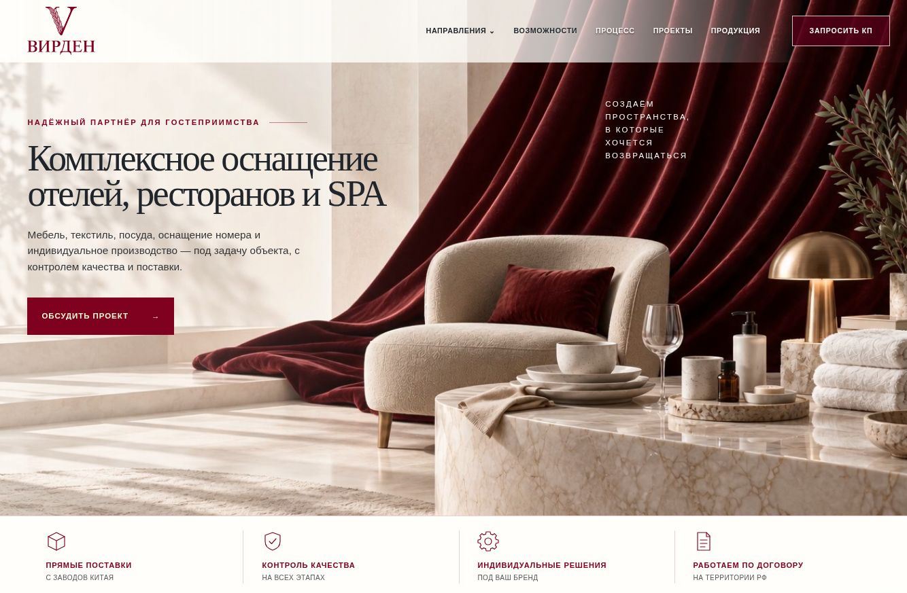
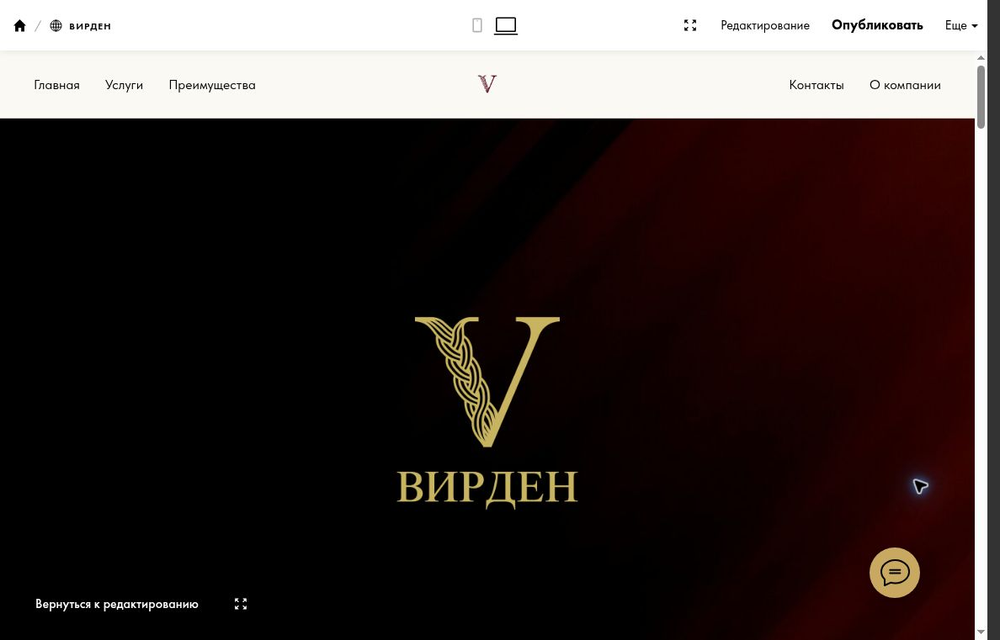
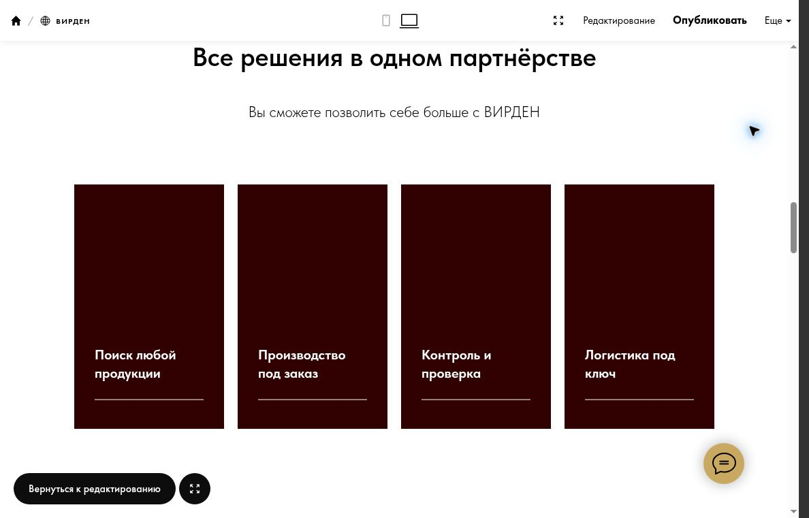
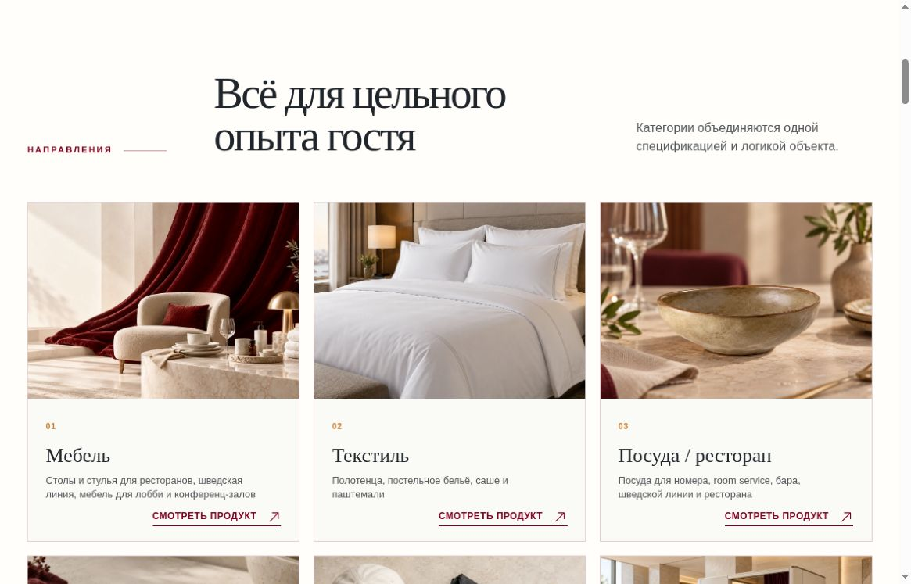
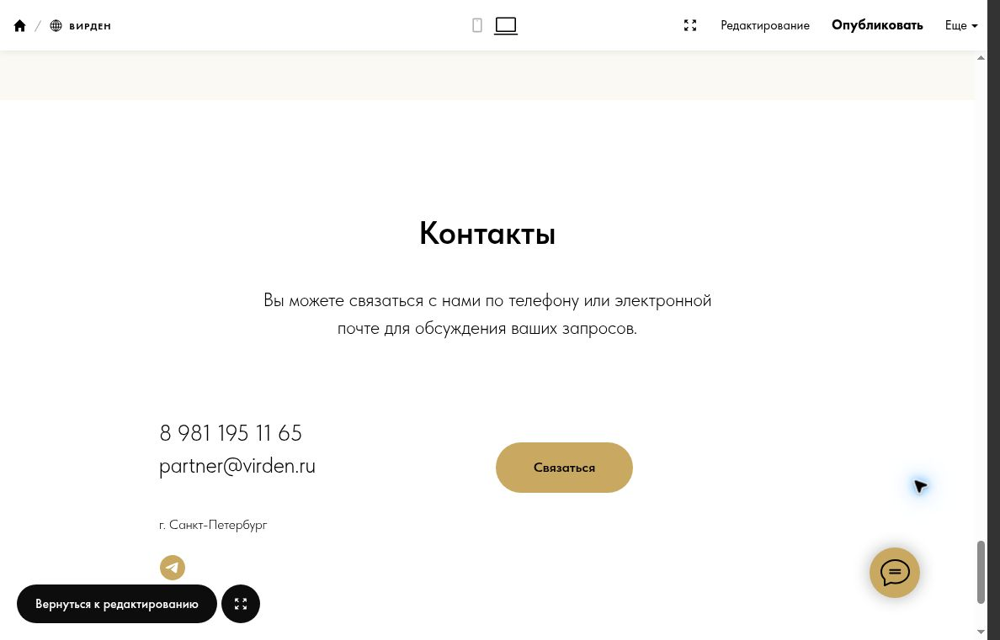
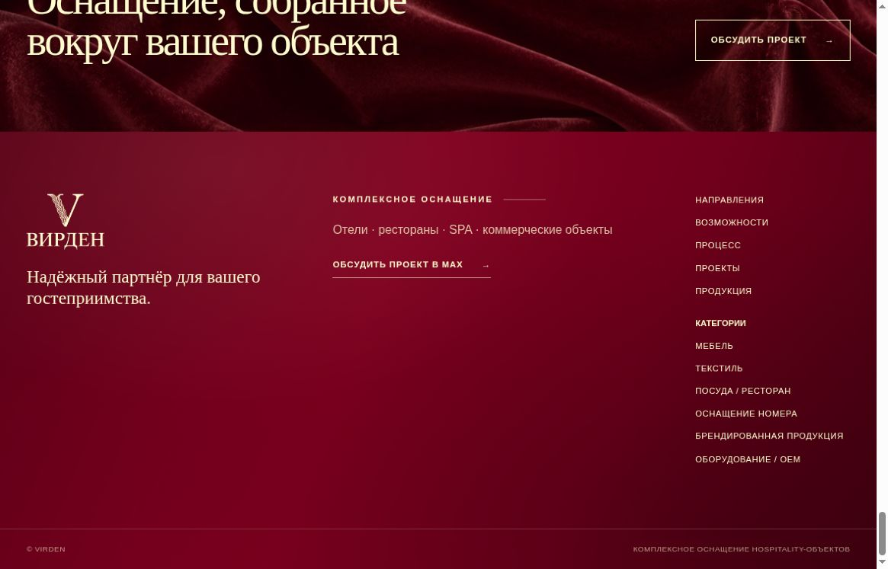
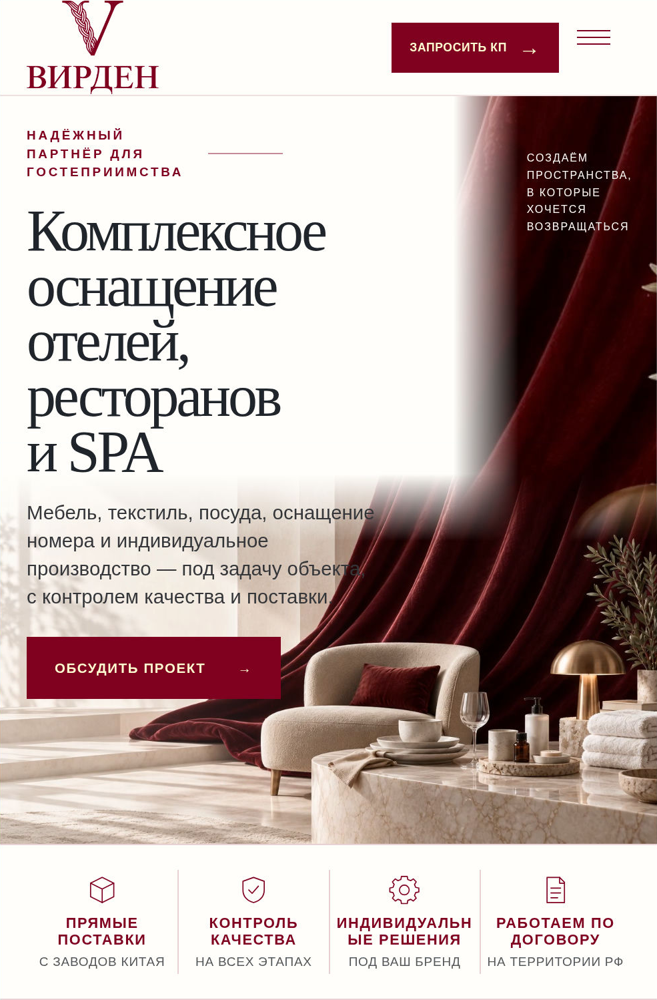

Партнёр для hospitality
Отели, рестораны и SPA обозначены в главном предложении. Продукция связана с задачей конкретного объекта.
Клиентский проект / HoReCa · Hospitality
Website Repositioning
/ Redesign
Комплексное оснащение.
Понятное B2B-предложение.

01 / Коммерческая задача
Сформировать ясное позиционирование VIRDEN как партнёра по комплексному оснащению отелей, ресторанов и SPA.
Собрать направления, индивидуальное производство и процесс поставки в одну историю. Помочь B2B-заказчику понять, с какой задачей обращаться и каким будет следующий шаг.
02 / Что изменилось
Отели, рестораны и SPA обозначены в главном предложении. Продукция связана с задачей конкретного объекта.
Шесть направлений, карточка продукта, возможности кастомизации и пять этапов работы формируют понятный маршрут.
Светлая основа, бордовый акцент, крупная типографика и предметные сцены объединяют разные категории оснащения.
Мобильная композиция первого экрана, меню и контентные блоки адаптированы к узкому экрану.
Призывы обсудить проект ведут в MAX. Контакт доступен в первом экране, навигации и завершении страницы.
Метаданные, canonical и sitemap.
03 / До и после
На старом первом экране — логотип и название бренда. В новом — комплексное оснащение отелей, ресторанов и SPA, пояснение состава работ и «Обсудить проект».

Поиск продукции, производство, контроль и логистика в старой версии. В новой — предметные категории: мебель, текстиль, посуда и другие направления, связанные с задачей hospitality-объекта.


В старой версии — телефон, email и кнопка «Связаться». В новой — призыв обсудить оснащение объекта и переход в MAX.


04 / Mobile
Предложение, изображение и контакт собраны в вертикальную композицию. Основное действие остаётся рядом с объяснением услуги.

05 / Результат